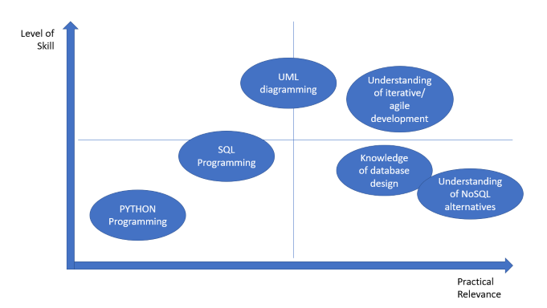

Before the PG Cert - My expectations and objectives:
My reasons for beginning the PG Cert in Computer Science with the University of Essex Online were specifically motivated by developments in online teaching and learning interfaces within universities (as I work in an admin role in a private university). More generally they were also linked to professional development in terms of developing a stronger understanding of app and software development and also the analysis and application of big data in a business context. I was also curious about the hands-on aspect of learning a programming language and was excited to see how I might develop this aspect of my skillset, the principles of which (mathematics, logic, rationalization) were completely foreign to me.
On completion of the OOIS module – current status, analysis of strengths and weaknesses
I felt the OOIS module was a large step up from the Launching into Computer Science (LCS) module. LCS was a fantastic opportunity to piece together my existing general knowledge in computer science and computer infrastructure and be able to understand certain concepts in more depth (such as networks, operating systems and the use of Agile techniques in software development). The programming tasks were a challenge at first, but by the end of the module I felt I had a much better grasp of programming concepts than I did at the beginning, which was very fulfilling. I also enjoyed experimenting with SQL, as this is the type of programming language I had been most exposed to in the past. The final essay allowed me to reflect on digital transformation in a university context, which was a welcome opportunity to do some research into best practices in terms of online delivery of education (especially as an online student myself!).
I would like to reflect separately on several aspects of the OOIS module.
1) Programming
The coding activities were very challenging for me in this module. I think I have a long way to go before I fully grasp object-oriented design and can master the syntax, conventions and best practice to employ in python. I think this is partly since I have very little background in mathematics and logic. I supported my learning by using an app called Mimo, to train myself through mini exercises. However, although the bitesize nature of the exercises was useful, it was not helpful in terms of building a system design that implemented different classes, implementing inheritance, encapsulation, polymorphism etc. For example, I would have liked to have made better use of the Time and Date module in order to configure a fully functioning calendar, and would have liked to have made better use of dictionaries and key value pairs. I felt I was too reliant on getting data from user input (in the absence of a GUI) and was then not using this data effectively within the program and was limited by too heavy use of string formats. Next time I would approach an exercise like this with a pre-populated spreadsheet in order also to simulate an external database connection.
Nevertheless, I would like to continue to develop my skills in python, and become a more proficient programmer.
2) System Modelling
I did not have any experience of UML before the OOIS module. I found it a useful way of modelling systems and processes although I was a little surprised that there was so much open interpretation in the language and conventions used, and also that it is not necessarily viewed as being a favourable approach to system design by many software developers. The tasks to produce activity diagrams, sequence diagrams and class diagrams were useful for me as a programming novice. The activity and sequence diagrams were also very effective for considering the UX element of system design, which I believe to be a very important part of program and application design (and one that can cause deficiencies and errors when deploying technological innovations on a large scale – as seen in my NEST system failure example, here
3) Database Design and Implementation
This part of the course was one that is most relevant to my working life and one that I would like to develop further. I would have liked to go into further depth into the NoSQL topic to understand better the applications of NoSQL non-tabular database structures for analysing relational data. I would like to look at database solutions in environments where there is no one-fits-all approach across a single business scenario, where several query languages (including SQL) and data management platforms may be appropriate and how these can effectively interact. I think this is the realistic scenario of many businesses today.
My future objectives and conclusion:
Before writing this reflection, I created a simple graphical visualization of my progress to date in the OOIS module, my perceived level of skill and their practical relevance to my career currently.

To conclude, I feel that my knowledge of NoSQL environments is less advanced but is practically the most relevant for my professional development. In this context, and considering my relative lack of skill for programming, I would like to now begin exploring the out of the box tools from Microsoft (such as PowerBI, PowerQuery and Power Apps) to most efficiently apply the knowledge gained from my studies so far for professional purposes. I intend to consider gaining certification with business-relevant and flexible data analytics and programming toolkits.
Back to module page